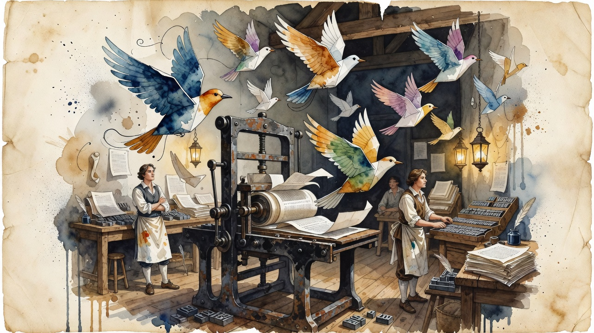

DeepSeek ships again
DeepSeek-V4.1-Flash-1017 lands as a same-price Pareto update with MIT weights
DeepSeek released a refresh of V4.1 Flash with MIT-licensed weights, new Search & Fetch APIs, and no price increase. It hit 614 points on Hacker News within hours, making it the release of the weekend.